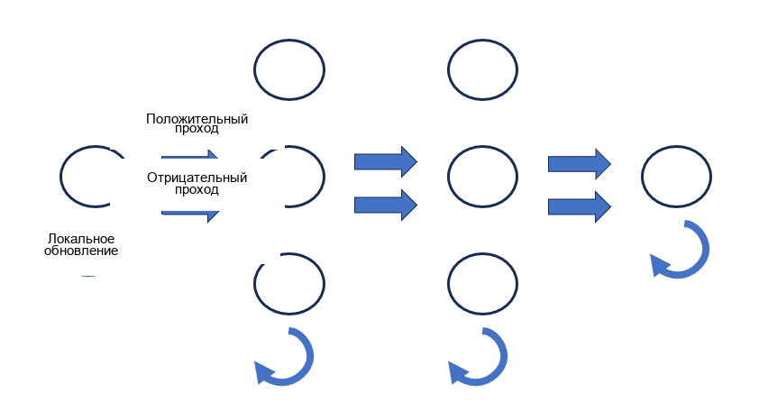
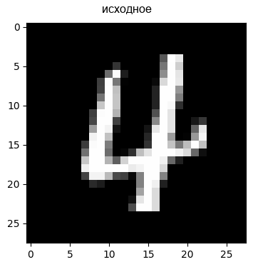
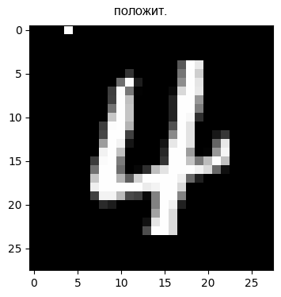
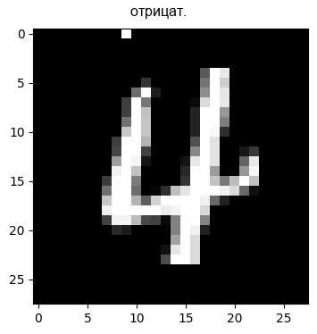
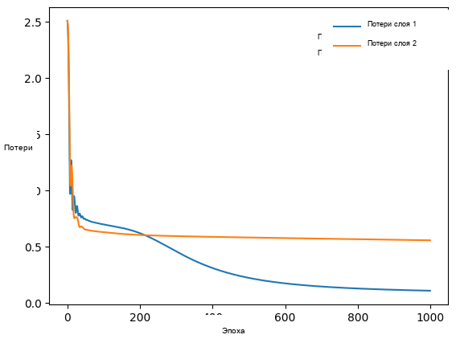
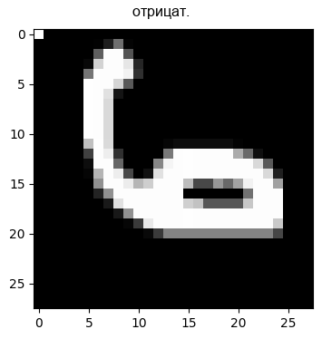

Русский перевод. Неофициальный перевод актуальной документации snnTorch latest (0.9.4). Оригинал: https://snntorch.readthedocs.io/en/latest/. Документация распространяется по лицензии CC BY-SA 3.0.
Алгоритм Forward-Forward с спайковой нейронной сетью
Учебное пособие написано Ethan Mulle и Abhinandan Singh

Следующее учебное пособие знакомит с реализацией алгоритма Forward-Forward, предложенного Джеффри Хинтоном, в спайковой нейронной сети (SNN). > Джеффри Хинтон. The Forward-Forward Algorithm: Some Preliminary Investigations. 2022. arXiv: 2212.13345 [cs.LG].
Алгоритм Forward-Forward вдохновлен моделью обучения в коре головного мозга и предлагает потенциально маломощную, локальную, свободную от обратного распространения альтернативу обучению модели. Конечно, это сложный алгоритм для масштабирования на более сложные задачи. Но это хорошая отправная точка для изучения.
Серия учебных пособий snnTorch основана на следующей статье. Если вы считаете эти ресурсы или код полезными в своей работе, пожалуйста, укажите следующий источник:
Установите последнюю версию дистрибутива snnTorch из PyPi, нажав на следующую
ячейку и нажав Shift+Enter.
pip install snntorch
import torch, torch.nn as nn
import snntorch as snn
device = torch.device("cuda") if torch.cuda.is_available() else torch.device("cpu")
1. Набор данных MNIST
1.1 Загрузка данных
Настройте загрузчики данных для обучающего и тестового наборов MNIST.
Определите конвейер преобразования данных и выполните итерацию по первому пакету загрузчика обучения, чтобы проверить размер данных.
Преобразования включают преобразование изображений в оттенки серого, преобразование их в тензоры, нормализацию значений пикселей и выравнивание тензоров.
from torchvision.datasets import MNIST
from torchvision.transforms import Compose, Grayscale, ToTensor, Normalize, Lambda
from torch.utils.data import DataLoader
transform = Compose([
Grayscale(),
ToTensor(),
Normalize((0,), (1,)),
Lambda(lambda x: torch.flatten(x))])
# Train set
mnist_train = MNIST('./data/', train=True, download=True, transform=transform)
train_loader = DataLoader(mnist_train, batch_size=128, shuffle=True)
# Test set
mnist_test = MNIST('./data/', train=False, download=True, transform=transform)
test_loader = DataLoader(mnist_train, batch_size=128, shuffle=False)
2. Теория алгоритма Forward-Forward
Алгоритм Forward-Forward — это правило обучения, вдохновленное машинами Больцмана и оценкой шумового контраста. Основная идея заключается в том, что каждый слой учится различать положительной примеры (которые мы рассматриваем как ‘good’) из negative примеры (которые мы рассматриваем как ‘bad’. Он работает путем замены прямого и обратного проходов обратного распространения двумя прямыми проходами: - Положительный проход - Отрицательный проход.
Во время положительного прохода через сеть подается обучающий пример с его меткой. Каждый слой вычисляет goodness меру (например, сумму квадратов выходных сигналов нейронов). Веса обновляются, чтобы увеличить goodness для этого класса правильных примеров.
Во время отрицательного прохода мы подаем bad примеры. Например, тот же вход может быть подан с неправильной меткой класса. Сеть снова измеряет goodness в каждом слое, но теперь веса обновляются, чтобы уменьшить goodness. Считается, что за многие итерации каждый слой уточняет локальные фильтры или шаблоны, которые наилучшим образом отличают каждый класс от шума или других классов, без необходимости в глобальном сигнале обратного распространения.
Высокоуровневая иллюстрация алгоритма показана ниже.

Хинтон предлагает измерять goodness с помощью метрики, такой как сумма квадратов нейронной активности. Цель состоит в том, чтобы goodness превышала некоторое пороговое значение для реальных данных и падала ниже порога для отрицательных данных. На практике Хинтон применяет сигмоидную функцию \(\sigma\) к этому отклонению от порога \(\theta\) так что результат можно интерпретировать как вероятность того, что входной вектор является положительным (т.е. реальным):
где \(y_j\) является активностью скрытого блока \(j\).
3. Реализация
Мы следуем и модифицируем реализацию алгоритма Forward-Forward, найденную здесь: > Mohammad Pezeshki. pytorch_forward_forward. Github Repo January 2023.
Для этого мы должны определить как класс слоя, так и класс сети.
3.1 Определение класса слоя
LeakyLayer: это пользовательский leaky integrate-and-fire слой с дополнительными атрибутами. Класс предназначен для использования в качестве слоя в нейронной сети.
Модуль метод forward: определяет вычисления для прямого прохода через ‘LeakyLayer’. Мембранный потенциал инициализируется, входные данные нормализуются и взвешиваются, а затем пропускаются через нейрон с утечкой и интеграцией-и-срабатыванием, чтобы вернуть результирующий мембранный потенциал.
Модуль метод train: выполняет цикл обучения в течение указанного количества эпох. Вычисляет goodness для положительных и отрицательных данных, рассчитывает потери на основе этих значений goodness, локально распространяет градиенты обратно и обновляет параметры с помощью оптимизатора. Метод возвращает мембранные потенциалы для положительных и отрицательных данных после обучения.
from tqdm import tqdm
from torch.optim import Adam
import torch.nn.functional as F
class LeakyLayer(nn.Linear):
def __init__(self, in_features, out_features, activation, bias=False):
super().__init__(in_features, out_features, bias=bias)
# Enable the choice between a spiking neuron and a standard artificial neuron (ReLU activation)
if activation == "lif":
self.activation = snn.Leaky(beta=0.8)
self.lif = True
else:
self.activation = nn.ReLU()
self.lif = False
self.opt = Adam(self.parameters(), lr=0.03)
self.threshold = 5.0
self.num_epochs = 1000
def forward(self, x):
if self.lif == True:
mem = self.activation.init_leaky() # initialize membrane potential
x_direction = x / (torch.norm(x, p=2, dim=1, keepdim=True) + 1e-4) # normalize the input
# Linear layer - not using nn.Linear(...) so we can define the update rule
weighted_input = torch.mm(x_direction, self.weight.T.to(device)) # MatMul between normalized input and weight matrix
if self.lif == True:
spk, potential = self.activation(weighted_input, mem) # note: only one step in time. Wrap in a for-loop to iterate for longer.
else:
potential = self.activation(weighted_input)
return potential # to be used in subsequent layers or as the final output of the last layer
def train(self, x_pos, x_neg):
tot_loss = [] # store the loss values for each layer in each epoch
for _ in tqdm(range(self.num_epochs), desc="Training LeakyLayer"):
# Compute goodness
g_pos = self.forward(x_pos).pow(2).mean(1) # positive data
g_neg = self.forward(x_neg).pow(2).mean(1) # negative data
# take the mean of differences between goodness and threshold across pos and neg samples
loss = F.softplus(torch.cat([-g_pos + self.threshold, g_neg - self.threshold])).mean()
self.opt.zero_grad()
loss.backward() # local backward-pass
self.opt.step() # update weights
tot_loss.append(loss)
# returns the final membrane potentials (activations) for positive and negative examples after training.
# detach() ensures no further backward pass is possible
output = self.forward(x_pos).detach(), self.forward(x_neg).detach()
return (output, tot_loss)
3.2 Определение сети
Модуль predict метод накладывает информацию о метке на входные данные, пропускает их через каждый слой нейронной сети, вычисляет значения goodness на каждом слое, накапливает их для каждой метки и возвращает предсказанные метки на основе максимального goodness.
Модуль train метод перебирает слои нейронной сети, выводит информацию о текущем обучаемом слое и обновляет входные тензоры (‘h_pos’ и ‘h_neg’), вызывая метод ‘train’ каждого слоя. Это позволяет слоям учиться и адаптировать свои параметры в процессе обучения.
class Net(nn.Module):
def __init__(self, dims, activation):
super().__init__()
self.layers = nn.ModuleList([
LeakyLayer(dims[d], dims[d + 1], activation) for d in range(len(dims) - 1) # define a multi-layer network
])
def predict(self, x):
goodness_per_label = [] # used to store the goodness values for each label
for label in range(10): # loop over the 10 possible labels
h = overlay_y_on_x(x, label) # overlay label information on top of the input data. function defined in next code-block.
goodness = []
for layer in self.layers: # inner loop over the layers
h = layer(h)
goodness.append(h.pow(2).mean(1)) # compute and store goodness for every layer
goodness_per_label.append(sum(goodness).unsqueeze(1)) # sum goodness values between all layers for one sample of data
goodness_per_label = torch.cat(goodness_per_label, 1) # convert list to tensor
return goodness_per_label.argmax(1) # returns maximum value giving the predicted label for each input
def train(self, x_pos, x_neg):
h_pos, h_neg = x_pos, x_neg
layer_losses = []
for i, layer in enumerate(self.layers):
print('Training layer', i, '...')
outputs, loss = layer.train(h_pos, h_neg) # update the weight matrix for each layer based on the local loss (defined by "goodness")
h_pos, h_neg = outputs
layer_losses.append(loss)
return torch.Tensor(layer_losses)
4. Обучение сети
4.1 Генерация образцов данных
Перед обучением нам нужно привести наши наборы данных в формат, который требуется алгоритмом Forward-Forward. Напомним, что метки и входные данные будут каким-то образом объединены.
Модуль ‘overlay_y_on_x’ функция:
Вход: ‘x’: тензор входных данных
Вход: ‘y’: входная метка
Выход: ‘x_’: Первые 10 пикселей x обнуляются и заменяются one-hot-кодированным представлением метки y. То есть метка ‘печатается’ в виде пикселей на входе. Y-метка также может быть рандомизирована для генерации неправильных меток, или ‘отрицательных’ образцов.
Эта функция применяется к набору данных MNIST и передается вашей сети. Каждый слой обновляется на основе приведенной выше функции goodness.
import matplotlib.pyplot as plt
def overlay_y_on_x(x, y):
"""Replace the first 10 pixels of data [x] with one-hot-encoded label [y]"""
x_ = x.clone()
x_[:, :10] *= 0.0 # zero out the first 10 pixels of input data
x_[range(x.shape[0]), y] = x.max() # the y-label 'activates' the corresponding pixel
return x_
def visualize_sample(data, name='', idx=0):
reshaped = data[idx].cpu().reshape(28, 28)
plt.figure(figsize = (4, 4))
plt.title(name)
plt.imshow(reshaped, cmap="gray")
plt.show()
4.2 Визуализация образцов данных
torch.manual_seed(123)
net = Net([784, 500, 500], "lif").to(device) # construct neural net with 784 input neurons, 500 neurons in each of the two hidden layers
x, y = next(iter(train_loader))
x, y = x.to(device), y.to(device)
x_pos = overlay_y_on_x(x, y) # generate positive samples (i.e., correct labels overlayed on input data)
# generate negative samples (i.e., incorrect labels overlayed on input data)
rnd = torch.randperm(x.size(0))
x_neg = overlay_y_on_x(x, y[rnd]) #
# visualize samples
for data, name in zip([x, x_pos, x_neg], ['orig', 'pos', 'neg']):
visualize_sample(data, name)



4.3 Обучение сети
net.train(x_pos, x_neg)
print('Train error:', 100*(1.0 - net.predict(x).eq(y).float().mean().item()),'%')
Training layer 0 ...
Training LeakyLayer: 100%|██████████| 1000/1000 [00:02<00:00, 414.33it/s]
Training layer 1 ...
Training LeakyLayer: 100%|██████████| 1000/1000 [00:02<00:00, 434.15it/s]
Train error: 42.1875 %
5. Тестирование сети
x_te, y_te = next(iter(test_loader))
x_te, y_te = x_te.to(device), y_te.to(device)
print('Test error:', 100*(1.0 - net.predict(x_te).eq(y_te).float().mean().item()), '%')
Test error: 70.3125 %
Это не отлично, но запуск большего количества временных шагов симуляций на большем количестве эпох должен помочь. Попробуйте.
6. Построение графика потерь каждого слоя
plt.plot(layer_losses[0,:], label="Layer 1 Loss")
plt.plot(layer_losses[1,:], label="Layer 2 Loss")
plt.xlabel("Epoch")
plt.ylabel("Loss")
plt.legend()
plt.show()

Для сравнения мы также можем обучить и протестировать ту же архитектуру сети на тех же данных, но теперь используя ReLU в качестве функции активации вместо LIF.
net = Net([784, 500, 500], "relu").to(device)
# load training data
x, y = next(iter(train_loader))
x, y = x.to(device), y.to(device)
# overlay labels on data
x_pos = overlay_y_on_x(x, y)
rnd = torch.randperm(x.size(0))
x_neg = overlay_y_on_x(x, y[rnd])
# visaualize samples
for data, name in zip([x, x_pos, x_neg], ['orig', 'pos', 'neg']):
visualize_sample(data, name)
net.train(x_pos, x_neg)
print('train error:', 100*(1.0 - net.predict(x).eq(y).float().mean().item()),'%')
# load test data
x_te, y_te = next(iter(test_loader))
x_te, y_te = x_te.to(device), y_te.to(device)
print('test error:', 100*(1.0 - net.predict(x_te).eq(y_te).float().mean().item()),'%')

Training layer 0 ...
Training LeakyLayer: 100%|██████████| 1000/1000 [00:01<00:00, 694.31it/s]
Training layer 1 ...
Training LeakyLayer: 100%|██████████| 1000/1000 [00:01<00:00, 701.83it/s]
train error: 39.0625 %
test error: 56.25 %
Как показано в этом примере Keras , стандартная искусственная нейронная сеть, использующая обратное распространение с аналогичной архитектурой и гиперпараметрами, может достичь ошибки на тестовом наборе около 2.50%.
Как показано в документация snnTorch Tutorial 5 , спайковая нейронная сеть, использующая обратное распространение с той же архитектурой и аналогичным набором гиперпараметров, достигает ошибки на тестовом наборе около 6.13%.
Попробуйте изменить код, чтобы сократить этот разрыв.
Этот проект был частично поддержан Национальным научным фондом (National Science Foundation) RCN-SC 2332166.